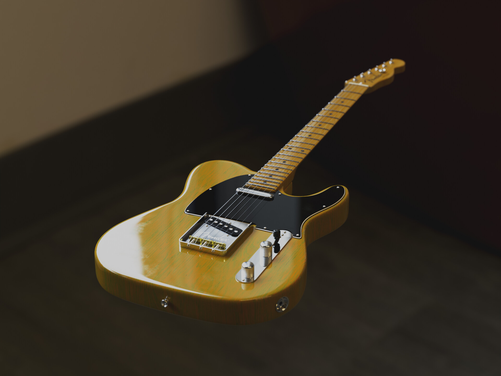
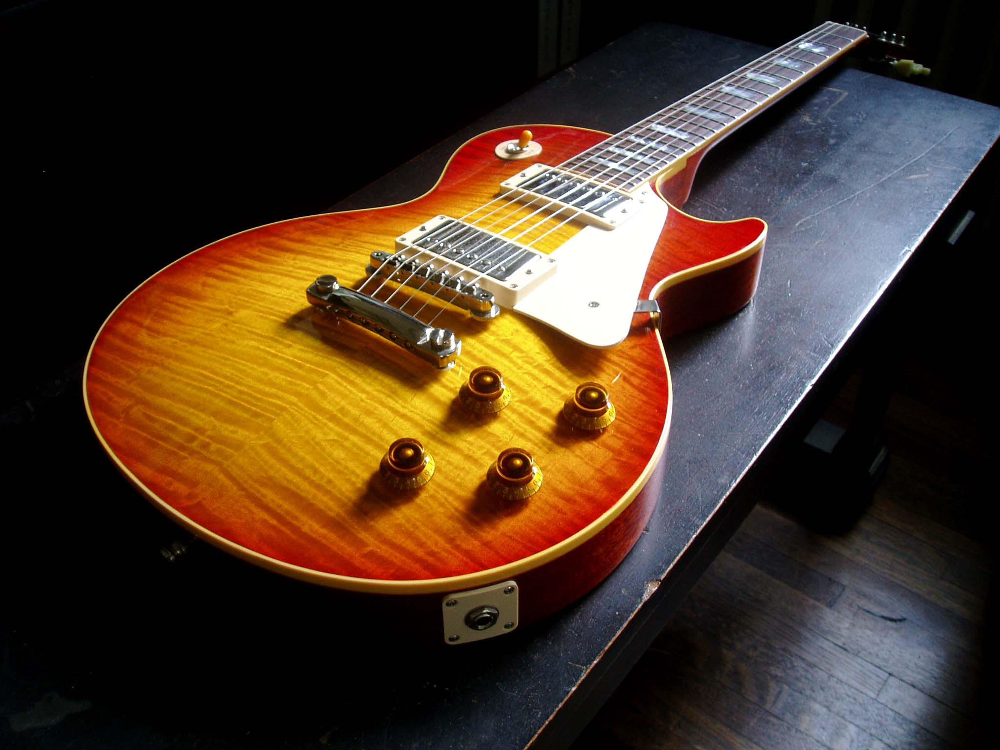
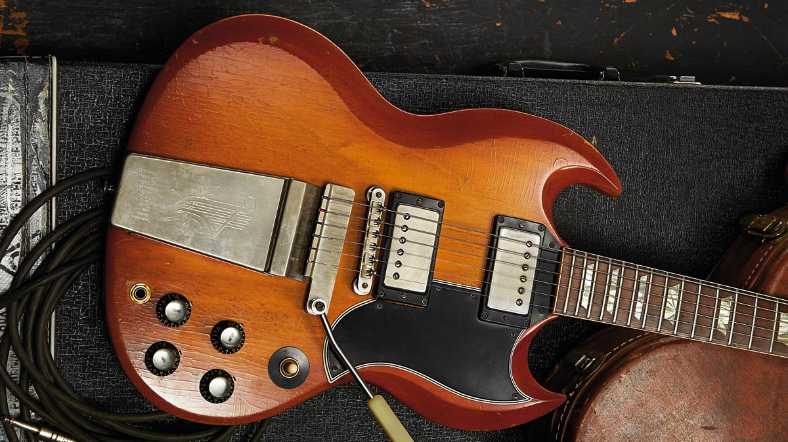

VŠESTRANNÝ TVAR
VŠESTRANNÝ TVARStratocaster
Kontúrované telo s dvojitým výrezom, tri jednocievkové snímače a tremolo. Navrhnutá v rokoch 1952 až 1954 tímom okolo Lea Fendera, na trh prišla v roku 1954.
- Rock, blues
- Jasný a artikulovaný tón
Spoznaj tvary, časti a značky elektrických gitár na
jednom mieste. Vytvor si prehľad a nájdi nástroj, ktorý
bude sedieť tvojemu štýlu a skúsenostiam.
Porovnaj základné tvary a vyber si smer, ktorým sa chceš vydať.
Spoznajte ikonické tvary elektrických gitár a objavte, ako jednotlivé časti
nastroja ovplyvňujú jeho zvuk, pohodlie aj charakter.
Štyri siluety, ktoré formovali zvuk modernej
kapely.
VŠESTRANNÝ TVARKontúrované telo s dvojitým výrezom, tri jednocievkové snímače a tremolo. Navrhnutá v rokoch 1952 až 1954 tímom okolo Lea Fendera, na trh prišla v roku 1954.

KLASICKÝ TVARJedna z prvých sériovo vyrábaných gitár s plným telom. Jednoduché telo s jedným výrezom, skrutkovaný krk a charakteristický, čistý zvuk. Vznikla v roku 1950.

JEDEN VÝREZGitara s jedným výrezom, mahagónovým telom s javorovým vrchom a vlepeným krkom, zvyčajne s dvoma humbuckermi. Prvýkrát sa predala v roku 1952, vznikla v spolupráci s gitaristom Lesom Paulom.

DVOJITÝ VÝREZGibson ju uviedol v roku 1961 s dvojitým výrezom a vlepeným krkom. Skratka SG znamená „solid guitar“. SG Standard je najpredávanejší model značky.
Kliknite na názvy časti alebo bod v diagrame a zistíte, na čo slúži.
Každý prvok má svoju úlohu – od ladenia strún až po prenos vibrácií na elektrický signál.
Kliknite na body pre zobrazenie informácií.
Objavte overené značky a prvé elektrické gitary pre začiatočníkov. Bez zložitých žargónov, s výborným podkladom vášho štýlu a rozpočtu.
Každá značka má vlastný rukopis. Spoznajte ho
na prvý pohľad.
od 1946
Ikonický dizajn, zvuk a pohodlný tvar, ktorý inšpiroval generácie rockových gitaristov.
od 1902
Legenda medzi rockovými gitarami. Hustý tón, mahagónové telo a nadčasový vzhľad.
od 1908
Rýchle krky a moderný charakter pre hráčov, ktorí chcú odpoveď novej techniky.
od 1980
Ostrý dizajn a energický zvuk pre metal, hard rock aj technicky náročné hranie.
od 1975
Precízne spracovanie a silné snímače pre moderný rock a metal bez kompromisov.
od 1985
Elegantné nástroje s univerzálnym tónom, ktoré spájajú tradičnú detailovú presnosť.
Vybrali sme modely, na ktorých sa dobre učí a ktoré vás budú baviť.
Dostupná a pohodlná gitara na učenie základov, cvičenie doma a prvé nahrávky.
Ľahká gitara s klasickým tvarom Stratocaster a zvukom, ktorý vás bude baviť každý deň.
Spoľahlivá univerzálka s pohodlným krkom – skvelý prvý krok do sveta elektrickej gitary.
Moderný nástroj s tenkým krkom a výrazným humbucker zvukom pre prvé riffy aj sóla.
Prehliadka obrázkov vybranej gitary.